PORTAL DE CAPACITACIONES

SERIE · EPP
0/6Elementos de protección personal
9 capítulos0 vistos~13 min
Video base + 8 módulos. Empezá por el video base, en el centro: cada video que terminás desbloquea el siguiente. Lo visto queda tildado en este celular. Los módulos 6, 7 y 8 se suman a la serie.
VistoSigueBloqueadoEn producción
EPP · VIDEO BASE
Elementos de protección personal
Serie de EPP · video de 2:27 · Lic. Marcelo ElviraMaterial para descargar
Ver la cartilla
Se abre en el celular Bajar en PDF
Para imprimir o compartir Constancia de entrega de EPP
Formulario oficial SRT · Res. 299/11 Constancia de capacitación
Se arma para cada empresa: pedila acá
Se abre en el celular Bajar en PDF
Para imprimir o compartir Constancia de entrega de EPP
Formulario oficial SRT · Res. 299/11 Constancia de capacitación
Se arma para cada empresa: pedila acá
Norma de cada elemento de la serie
- Casco de seguridadIRAM 3620EN 397 · ANSI/ISEA Z89.1
- Protección ocular y facialIRAM 3630ISO 16321 · EN 166
- GuantesIRAM 3608 + IRAM 3607ISO 21420 · ISO 23388
- Calzado de seguridadIRAM 3610ISO 20345
- Ropa de trabajoIRAM 3870ISO 13688
- Protección respiratoriaIRAM 3648 / 3649EN 149 · EN 140
- Protección auditivaIRAM 4125 / 4126EN 352
- Arnés y anticaídasIRAM 3622EN 361 · EN 363
Lo que dice el video
Los elementos de protección personal (EPP) son los dispositivos, accesorios y prendas que protegen a quien los usa. Son la última barrera entre la persona y el riesgo: primero se debe eliminar el riesgo o controlarlo en su origen, y los EPP se deben usar cuando esas medidas no alcanzan.
HIGIENE Y SEGURIDAD
Determina qué EPP requiere cada puesto. Desde ese momento, su uso es OBLIGATORIO.
LA EMPRESA
Debe entregarlos certificados y registrar cada entrega en la constancia de la SRT.
EL TRABAJADOR
Debe usarlos, conservarlos y cuidarlos, y firmar cada entrega en su renglón.
Certificación y constancia de entrega
CertificadosLa norma figura en la etiqueta o en el propio elemento.
Constancia SRTRes. SRT 299/11: un protocolo por trabajador.
Un renglón por entregaQué se entrega, marca y modelo, certificación, cantidad y fecha. Lo firma el trabajador.
Uso individualLos EPP no se deben compartir ni intercambiar.
ANTES DE CADA USO
Revisar que el EPP esté completo y en buen estado. Usar los EPP que el servicio de Higiene y Seguridad determinó para el puesto.
AL TERMINAR
Limpiarlo. Guardarlo en un lugar limpio y seco.
CUÁNDO SE CAMBIA
Si está roto, deformado o cumplió su vida útil, ya no protege como corresponde. Avisar al responsable y pedir el recambio.
NUNCA
- Modificar un EPP: cambia la forma en que protege
- Compartirlo o intercambiarlo
- Usarlo roto o deformado
- Trabajar sin el EPP del puesto
Para repasar
¿Quién determina qué elementos de protección requiere cada puesto?
Correcto. Desde ese momento, su uso es obligatorio.
SÍNTESISUsar los EPP que requiere el puesto · Revisarlos antes de cada uso · Limpiarlos y guardarlos en un lugar limpio y seco · Pedir el recambio si están dañados
Ante cualquier duda, SIEMPRE se debe consultar antes de empezar.
SIGUE EN LA SERIE · MÓDULO 1 DE 8Casco de seguridad
EPP · MÓDULO 1 DE 8
Casco de seguridad
Serie de EPP · video de 1:40 · Lic. Marcelo ElviraMaterial para descargar
Ver la cartilla
Se abre en el celular Bajar en PDF
Para imprimir o compartir Constancia de entrega de EPP
Formulario oficial SRT · Res. 299/11 Constancia de capacitación
Se arma para cada empresa: pedila acá
Se abre en el celular Bajar en PDF
Para imprimir o compartir Constancia de entrega de EPP
Formulario oficial SRT · Res. 299/11 Constancia de capacitación
Se arma para cada empresa: pedila acá
Norma del casco
- Casco de seguridad para uso industrialIRAM 3620EN 397 · ANSI/ISEA Z89.1
- Casco eléctricamente aislante (baja tensión)IRAM 3620+ EN 50365
- Gorra antigolpes (no reemplaza al casco)EN 812
Lo que dice el video
En una obra se trabaja al mismo tiempo en distintos niveles. El casco de seguridad protege la cabeza y se debe usar donde exista riesgo de golpes, de caída o de proyección de objetos. En la obra, eso es SIEMPRE: desde que se entra hasta que se sale.
GOLPES
Contra estructuras, conductos, losas o materiales.
CAÍDA DE OBJETOS
Desde niveles superiores: herramientas, materiales, escombro.
PROYECCIÓN DE OBJETOS
Partes que salen despedidas durante la tarea.
Las partes y cómo se usa
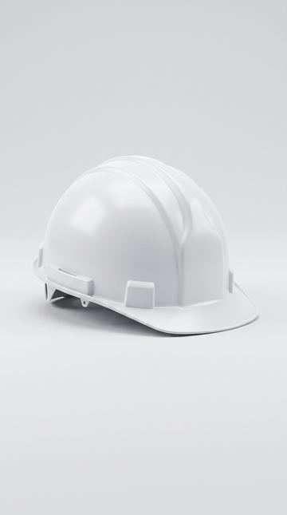
Carcasa exteriorResiste el golpe.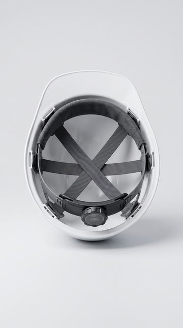
Arnés del cascoLa mantiene separada de la cabeza y reparte la fuerza.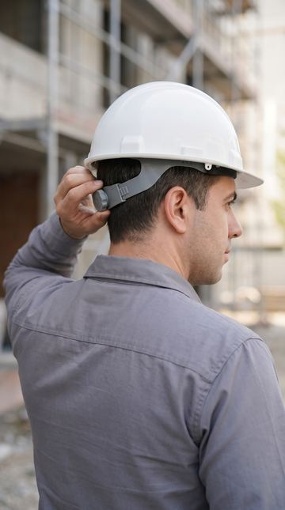
AjusteAntes de empezar se ajusta el arnés: cómodo, pero firme.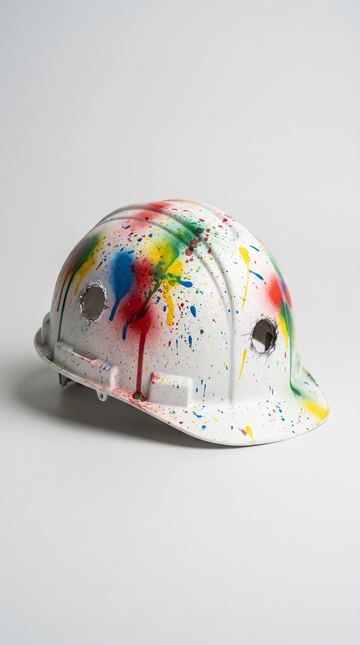
Así noLa carcasa y el arnés NUNCA se deben alterar.CÓMO SE USA
En la obra, siempre: desde que se entra hasta que se sale. Ajustar el arnés antes de empezar: cómodo, pero firme.
CÓMO SE REVISA
Antes de cada uso. Buscar grietas, agujeros, abolladuras, deformaciones o el arnés roto.
CUÁNDO SE CAMBIA
Si presenta alguno de esos daños. Después de un impacto fuerte, aunque parezca intacto a simple vista.
NUNCA
- Perforarlo
- Pintarlo
- Limpiarlo con solventes
- Cambiarle piezas por las de otra marca
Para repasar
Un compañero quiere pintar su casco con aerosol. ¿Se puede?
Correcto. Cualquier cambio altera la forma en que protege.
SÍNTESISUsar el casco siempre en la obra · Ajustar el arnés: cómodo, pero firme · Revisarlo antes de cada uso · Reemplazarlo si está dañado o recibió un golpe fuerte
Ante cualquier duda, SIEMPRE se debe consultar antes de empezar.
SIGUE EN LA SERIE · MÓDULO 2 DE 8Protección ocular y facial
EPP · MÓDULO 2 DE 8
Protección ocular y facial
Serie de EPP · video de 1:59 · Lic. Marcelo ElviraMaterial para descargar
Ver la cartilla
Se abre en el celular Bajar en PDF
Para imprimir o compartir Constancia de entrega de EPP
Formulario oficial SRT · Res. 299/11 Constancia de capacitación
Se arma para cada empresa: pedila acá
Se abre en el celular Bajar en PDF
Para imprimir o compartir Constancia de entrega de EPP
Formulario oficial SRT · Res. 299/11 Constancia de capacitación
Se arma para cada empresa: pedila acá
Norma de la protección ocular y facial
- Anteojos, antiparras y protector facialIRAM 3630ISO 16321 · EN 166
- Anteojos de seguridad graduadosIRAM 3630ISO 16321-1
- Soldadura: filtros para careta y anteojosIRAM 3630EN 169 / EN 175 · EN 379
- Protector facial de mallaEN 1731
Lo que dice el video
Al cortar con amoladora, taladrar o trabajar con productos químicos, pueden llegar partículas y salpicaduras a los ojos. La protección ocular se debe usar en las tareas con proyección de partículas y al trabajar con sustancias químicas o aerosoles, y se debe elegir según la tarea.
PROYECCIÓN DE PARTÍCULAS
Corte con amoladora, taladro, lijado, picado.
QUÍMICOS Y AEROSOLES
Salpicaduras, vapores y productos de limpieza.
FRENTE Y COSTADOS
Debe proteger de frente y de los lados: muchas partículas llegan desde los costados.
Qué elemento según la tarea
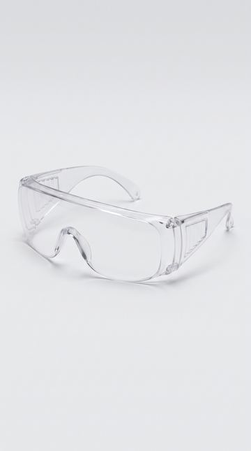
Anteojos de seguridadCon protección frontal y lateral.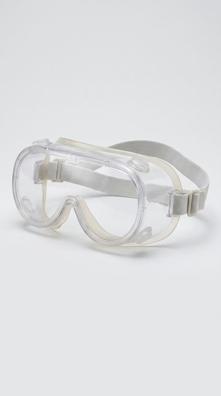
AntiparrasCerradas y ajustadas al rostro: con vapores, gases o aerosoles.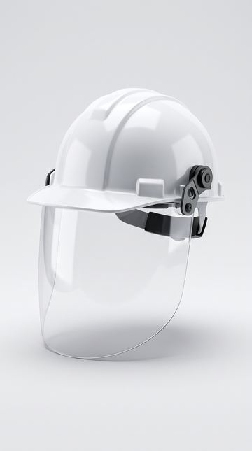
Protector facialCon mucha proyección (amoladora). Se usa con la protección ocular debajo.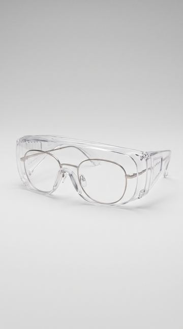
Anteojos recetadosAnteojos de seguridad graduados, o modelos que van por encima.CÓMO SE USA
Elegir el elemento según la tarea. Con amoladora: protector facial con la protección ocular colocada debajo.
CÓMO SE CUIDA
Al terminar, limpiar con agua y jabón neutro y secar con un paño suave. Guardar en su estuche.
CUÁNDO SE CAMBIA
Si está rayado, roto o deformado. Un lente rayado reduce la visión y deja de proteger como corresponde.
NUNCA
- Frotar los lentes en seco: el polvo los raya
- Usar el protector facial sin protección ocular debajo
- Usar anteojos comunes en lugar de los de seguridad
- Seguir usando un lente rayado
Para repasar
Si hay que hacer cortes con amoladora, ¿qué elemento de protección personal se debe usar?
Correcto. Cubre toda la cara, y los ojos quedan protegidos debajo.
SÍNTESISElegir la protección según la tarea · Protección frontal y lateral · Protector facial con la protección ocular debajo · Limpiar con agua y jabón y guardar en su estuche
Ante cualquier duda, SIEMPRE se debe consultar antes de empezar.
SIGUE EN LA SERIE · MÓDULO 3 DE 8Protección de manos
EPP · MÓDULO 3 DE 8
Protección de manos
Serie de EPP · video de 2:21 · Lic. Marcelo ElviraMaterial para descargar
Ver la cartilla
Se abre en el celular Bajar en PDF
Para imprimir o compartir Constancia de entrega de EPP
Formulario oficial SRT · Res. 299/11 Constancia de capacitación
Se arma para cada empresa: pedila acá
Se abre en el celular Bajar en PDF
Para imprimir o compartir Constancia de entrega de EPP
Formulario oficial SRT · Res. 299/11 Constancia de capacitación
Se arma para cada empresa: pedila acá
Norma de los guantes
- Guantes de protección (requisitos generales)IRAM 3608ISO 21420 · EN 420
- Contra riesgos mecánicosIRAM 3607ISO 23388 · EN 388
- Contra productos químicosIRAM 3609ISO 374
- Contra calor y fuegoIRAM 3612ISO 23407 · EN 407
- Aislantes para trabajos con tensiónIRAM 3604IEC 60903
Lo que dice el video
Las manos están expuestas a cortes, roces, pinchazos, productos químicos, calor y electricidad, entre otros. No hay un guante para todo: cada guante protege contra un riesgo determinado.
CORTES, ROCES Y PINCHAZOS
Guantes contra riesgos mecánicos, de cuero o con recubrimiento.
PRODUCTOS QUÍMICOS
Nitrilo, PVC o látex, según lo que indique la hoja de seguridad.
CALOR Y ELECTRICIDAD
Guantes contra el calor; dieléctricos sólo para el personal habilitado.
Los tipos de guantes
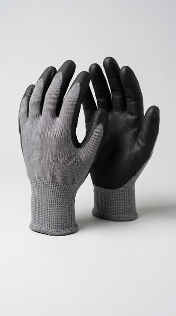
Riesgos mecánicosCuero o con recubrimiento: cortes, roces y pinchazos.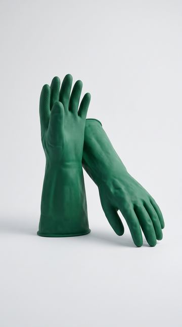
Productos químicosUn guante de cuero NO protege contra un producto químico.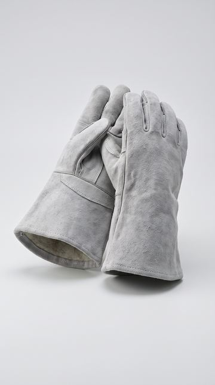
CalorPara piezas calientes.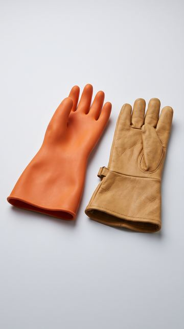
DieléctricosPara trabajos con tensión, sólo personal habilitado.CÓMO SE ELIGE
Leer el guante: en la etiqueta o el puño figuran la norma, el riesgo y el nivel de protección. Talle correcto: si queda grande se engancha y se pierde el agarre; si queda chico se rompe.
CÓMO SE REVISA
Antes de cada uso. Si tiene agujeros, cortes, desgaste o está endurecido, se debe reemplazar.
AL TERMINAR
Los guantes con producto químico se retiran sin tocar la parte de afuera con la mano descubierta. Después, lavarse las manos. Los descartables se usan una sola vez.
NUNCA
- Usar guantes cerca de piezas que giran (agujereadora de banco, torno)
- Usar guantes de cuero con productos químicos
- Volver a usar un guante descartable
- Usar un guante de otro talle
Para repasar
¿Cuándo NUNCA se deben usar guantes?
Correcto. El guante se puede enganchar y arrastrar la mano.
SÍNTESISElegir el guante según el riesgo · Leer la etiqueta y usar el talle correcto · Revisarlos antes de cada uso · Sin guantes cerca de piezas que giran
Ante cualquier duda, SIEMPRE se debe consultar antes de empezar.
SIGUE EN LA SERIE · MÓDULO 4 DE 8Calzado de seguridad
EPP · MÓDULO 4 DE 8
Calzado de seguridad
Serie de EPP · video de 2:21 · Lic. Marcelo ElviraMaterial para descargar
Ver la cartilla
Se abre en el celular Bajar en PDF
Para imprimir o compartir Constancia de entrega de EPP
Formulario oficial SRT · Res. 299/11 Constancia de capacitación
Se arma para cada empresa: pedila acá
Se abre en el celular Bajar en PDF
Para imprimir o compartir Constancia de entrega de EPP
Formulario oficial SRT · Res. 299/11 Constancia de capacitación
Se arma para cada empresa: pedila acá
Norma del calzado
- Calzado de seguridad con punteraIRAM 3610ISO 20345
- Botas de PVC o poliméricasIRAM 3610-2ISO 20345
- Calzado de trabajo sin punteraCertificado · ISO 20347
- Calzado dieléctricoEN 50321
Lo que dice el video
Los pies están expuestos a la caída de objetos, a aplastamientos, a pinchazos desde el piso y a resbalones. El calzado de seguridad se debe usar SIEMPRE en la obra y en todo puesto con esos riesgos.
PUNTERA
Resiste el golpe y el aplastamiento.
PLANTILLA ANTIPERFORACIÓN
Frena clavos y puntas desde el piso.
SUELA ANTIDESLIZANTE
Evita los resbalones.
Qué calzado según la tarea
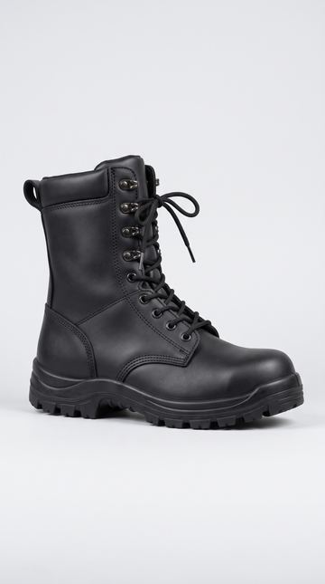
Botín con punteraObra, depósito y planta.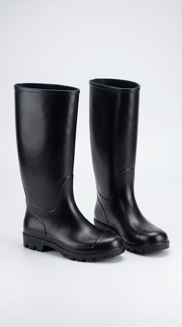
Botas de PVC con punteraCon agua, barro, hormigón fresco o productos químicos: no dejan pasar el líquido.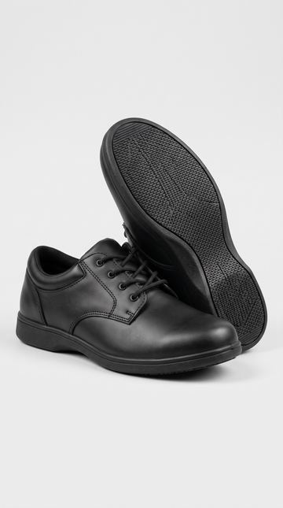
Calzado de trabajo sin punteraSólo donde no hay riesgo de golpes ni aplastamiento: cocinas, limpieza, tareas administrativas.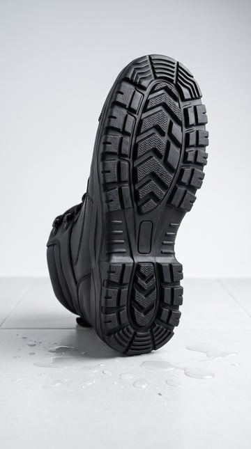
La suelaEnvejece también guardada: si se cuartea o se desgrana, se reemplaza.CÓMO SE USA
Del talle correcto para cada persona. Con los cordones atados completos, hasta arriba, para que el pie quede firme y no se tuerza el tobillo.
CÓMO SE REVISA
Antes de cada uso. Suela gastada, cuarteada o despegada, puntera a la vista o cortes: se debe reemplazar.
CUÁNDO SE CAMBIA
Con alguno de esos daños. Después de un golpe fuerte en la puntera, aunque parezca sano.
NUNCA
- Cortarlo
- Sacarle la puntera
- Hacerle agujeros
- Usarlo desatado
Para repasar
¿Dónde se debe usar el calzado sin puntera?
Correcto. Por ejemplo, cocinas, limpieza o tareas administrativas.
SÍNTESISUsar calzado de seguridad siempre en la obra · Elegirlo según la tarea · Talle correcto y cordones atados hasta arriba · Reemplazarlo si está dañado o recibió un golpe fuerte
Ante cualquier duda, SIEMPRE se debe consultar antes de empezar.
SIGUE EN LA SERIE · MÓDULO 5 DE 8Ropa de trabajo
EPP · MÓDULO 5 DE 8
Ropa de trabajo
Serie de EPP · video de 2:23 · Lic. Marcelo ElviraMaterial para descargar
Ver la cartilla
Se abre en el celular Bajar en PDF
Para imprimir o compartir Constancia de entrega de EPP
Formulario oficial SRT · Res. 299/11 Constancia de capacitación
Se arma para cada empresa: pedila acá
Se abre en el celular Bajar en PDF
Para imprimir o compartir Constancia de entrega de EPP
Formulario oficial SRT · Res. 299/11 Constancia de capacitación
Se arma para cada empresa: pedila acá
Norma de la ropa de trabajo
- Ropa de trabajo / indumentaria (general)IRAM 3870ISO 13688
- Alta visibilidad (chalecos, camperas)IRAM 3859ISO 20471
- SoldaduraIRAM 3881-1 / IRAM 3874ISO 11611
- Contra líquidos químicosIRAM 3884 / 3886 / 3887EN 13034 · EN 14605
Lo que dice el video
La ropa de trabajo protege la piel de roces, cortes leves, suciedad y sol. La empresa debe entregarla, igual que los elementos de protección personal, y se debe usar limpia y en buen estado.
AJUSTADA AL CUERPO
Sin partes sueltas que se puedan enganchar.
RESISTENTE Y CÓMODA
De tela resistente y fácil de lavar, sin que moleste al moverse.
CERRADA
Bolsillos, botones y cierres cerrados. Mangas ajustadas en la muñeca, salvo que la tarea y la temperatura hagan conveniente la manga corta.
Cuando la tarea tiene un riesgo especial
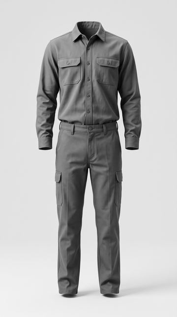
Ropa de trabajoLa base para todas las tareas.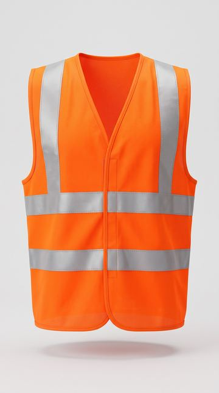
Chaleco de alta visibilidadDonde circulan vehículos: cerrado, limpio y con las bandas a la vista.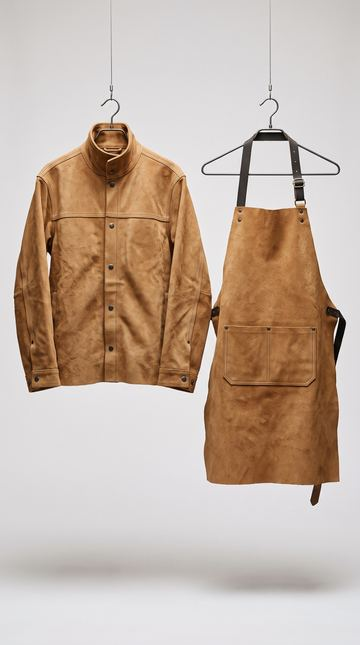
Ropa para soldarSe suma a la ropa de trabajo al soldar.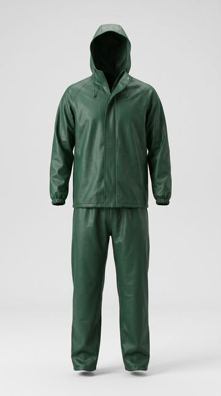
Contra productos químicosSe suma cuando hay salpicaduras de químicos.CÓMO SE USA
Cerca de máquinas que giran: sin bufandas, cadenas, pulseras, anillos, guantes ni ropa suelta. El pelo largo, recogido. Con un riesgo especial, sumar la indumentaria que corresponde.
CÓMO SE REVISA
Limpia y en buen estado. Rota, deshilachada o impregnada con aceite, combustible o productos químicos: se cambia, porque puede prender fuego o irritar la piel.
AL TERMINAR
Lavarla aparte de la ropa de la casa.
NUNCA
- Bufandas, cadenas, pulseras o anillos cerca de máquinas que giran
- Ropa suelta cerca de máquinas
- El pelo largo suelto
- Ropa impregnada con aceite o combustible
Para repasar
Cerca de máquinas que giran, ¿qué NUNCA se debe usar?
Correcto. Se pueden enganchar y arrastrar.
SÍNTESISUsar la ropa de trabajo ajustada y cerrada · Nada suelto cerca de máquinas que giran · Sumar la indumentaria del riesgo especial · Lavarla aparte de la ropa de la casa
Ante cualquier duda, SIEMPRE se debe consultar antes de empezar.
SIGUE · MÓDULO 6 DE 8 · EN PRODUCCIÓNProtección respiratoria
DISPONIBLE
Trabajo seguro con lana de vidrio y lana mineral
Aislación de cañerías · noviembre 2026 · video de 2:03Material para descargar
EPP obligatorios
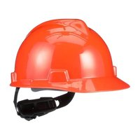
Casco de seguridad Barbijo N95
Barbijo N95 Antiparras cerradas
Antiparras cerradas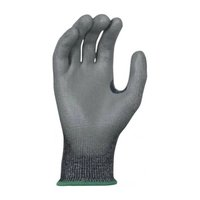
Guantes Ropa de trabajo
Ropa de trabajo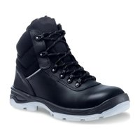
Calzado de seguridadCabeza y cuellosi hay exposición desde arriba
Cómo se trabaja
ANTES
Material embalado hasta su uso, ventilar y señalizar la zona. En altura, escalera o andamio en buen estado y arnés desde 2 m.
DURANTE
Cortar con cuchilla, de preferencia de hoja retráctil, NUNCA con herramientas eléctricas, y sin sacudir el material. Pegamento: guantes de látex. Chapa: guantes anticorte.
AL TERMINAR
Recortes en bolsas cerradas, limpiar con aspiradora o paño húmedo (nunca barrer en seco), lavarse con agua fría y jabón y lavar la ropa de trabajo aparte.
Si pasa algo
FIBRAS EN LOS OJOS
No frotar. Enjuagar con abundante agua durante 15 minutos. Si sigue la molestia, consultar al médico.
IRRITACIÓN EN LA PIEL
No rascar. Lavar con agua fría y jabón y cambiarse la ropa con fibras.
TOS O IRRITACIÓN DE GARGANTA
Salir al aire libre. Si persiste, consultar al médico (ART).
Ante cualquier duda, SIEMPRE consultar antes de empezar.